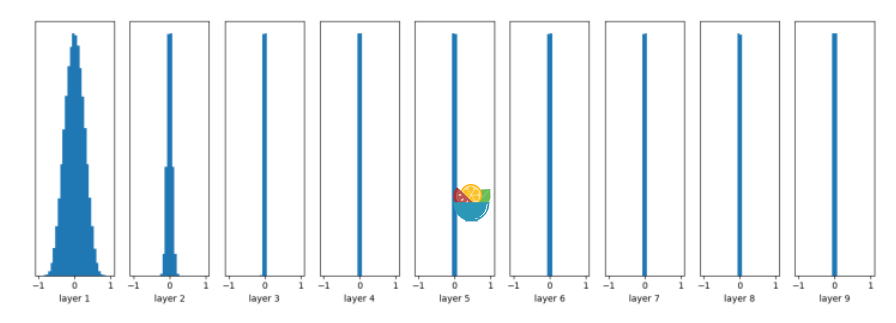
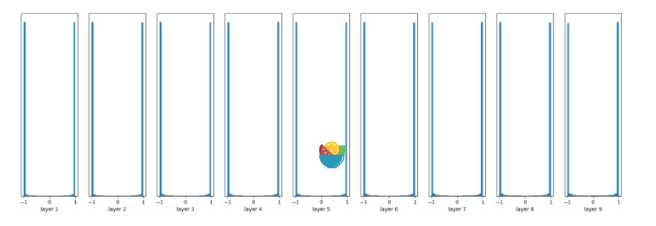
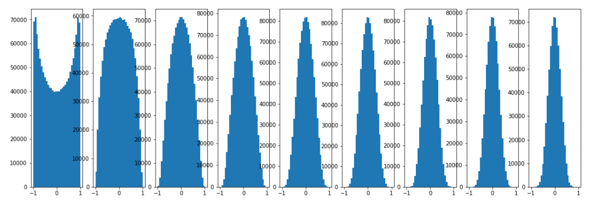
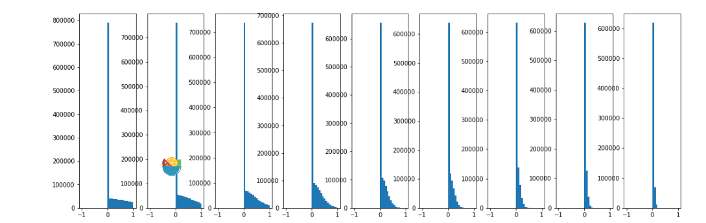
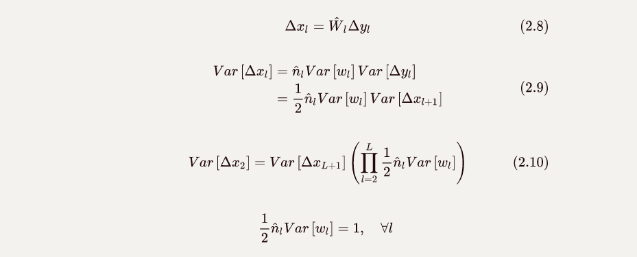
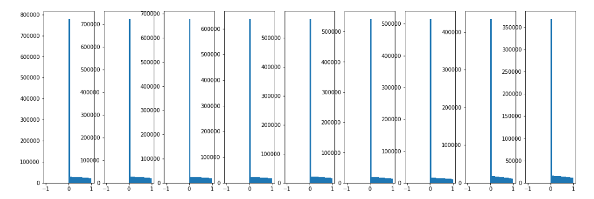

# 简介
对于神经网络这种复杂非凸问题来说，初始化是非常重要的，对于不同的场景应当选择适合的初始化方法。以下介绍常用的初始化方法。
0初始化
对于convex optimization问题来说，0初始化便可以达到很好的效果，但是这对于神经网络来说却是一种极为不利的方法，如果使用0初始化，则对应的每个神经元的参数都将是一致的，那么每次通过损失值梯度回传的更新参数也都是一致的，高度对称的权重使得神经网络失去了其最为重要的自动发掘特征的能力。
随机初始化
目前最为常用的是随机初始化，但是针对不同问题需要选择合适的分布，不然同样会影响网络的性能。
假定我们有一个以tanh为激活函数的神经网络，对于其参数我们使用均值为0，方差为0.01的高斯分布。创建一个10层的神经网络，则每一层的输出值分布直方图如下：

实现代码：
1 | import tensorflow as tf |
随着层数的增加，很明显可以查看出输出值迅速向0靠拢，后面的层输出几乎全是0，通过反向传播得到的梯度也就变成了0，使得神经网络难以继续优化下去。
反之，若是我们将方差调大，变成1，输出如下：

为了解决这个问题，Glorot和Bengio在2010提出了Xavier初始化方法。
Xavier Initialization
对于神经网络，我们希望他的输入空间和输出空间是同一个分布（一般用方差来衡量）。如果输入空间过于稀疏而输出空间过于稠密，那么通过反向传播得到的损失函数所返回的梯度就会变得很小使得网络难以训练；反之则会导致梯度爆炸。
在神经网络中层与层之间的传递主要是线性组合的形式：
方差
推导
已知$Var(x)=E(x^2)-E^2(x)$
由于$x$与$y$相互独立
通过假定$E(w_i)$与$E(x_i)$均为0（这个可以通过batch normalization对每一层重新调整分布做到，事实上影响不大），我们有
因为假定$w_i与x_i$均服从独立同分布假设（所有机器学习的通用假设），$Var(x_i)=Var(x)$，最终：
要保持输入$x$与输出的$z$方差不变，使$w$得方差为1即可。从正向和反向两个角度来看，$n_{in}$与$n_{out}$是不同的，此处对其取平均值，得到$w$方差表达式：
假定$w$为均匀分布，均匀分布对应的方差为
推出$w$的分布为:
这便是Xavier初始化方法。
同样，我们使用代码对其进行验证：

可以看出效果非常的好，即使是在第十层也维持了良好的分布。
但是Xavier是在线性变换的基础上提出来的，上述的实验也是建立在激活函数为tanh的情况下，理论上来说Xavier对于非线性激活函数是不具有普适性的，那么我们尝试将激活函数替换为RELU再次进行实验：

果然，一开始效果还可以，后来就基本全部接近于0了。
为了解决Relu激活函数的初始化问题，Kaiming He大佬与2015年提出了一种新的初始化方法，可以帮助激活函数为Relu的神经网络获得良好的初始化，称之为He初始化。
He Initialization
该初始化方法主要是针对卷积网络做的分析，首先对于卷积网络的每一层，我们有:
$x_l$的维度为$k^2c\times1$，表示图像中一块$k\times k$并且包含$c$个通道的区域，即卷积操作时对应的输入区域，我们为方便后面的表达令$n=k^2c$；$w_l$的维度为$n\times d$，表示为$d$个卷积核；最后得到对应一个pixel位置上的$d$个通道的值就是$y_l \in \mathcal{R}^{d\times 1}$。同时对于整个网络来说，$c_l=d_{l-1}$。
对上式求方差，假定$w_l$与$x_l$相互独立且两者均独立同分布：
假定$w_l$是zero-mean，原因见上一节，公式推导也见上一节。
由于RELU激活函数的性质，$x_l=max(0,y_{l-1})$，因此$E(x_l^2)\neq Var(x_l)$，假定我们使得$w_l$是一个关于0对称的分布，同时$y_l$也是一个关于0对称的分布，这会导致
$y_{l-1}$作为上一层的输出，在通过激活层RELU函数时，由于$y_l$关于0对称，一半的信息直接变为0，因此缩小为原来的$\frac{1}{2}$。
将2.4式代入2.3式中:
为了维持输入输出在同一个分布上，便需要满足
因此直接每一层按照$w_l \sim \mathcal{N}(0,\sqrt{2/n_l})$的分布随机初始化即可。
同理，反向传播时

最终得到的结论是一致的。唯一需要注意的是对于第一层，由于没有RELU激活函数，方差并不会变成一半，需要单独拿出来进行初始化。还有对于通过前向和反向推出的两个结果来说，使用任意一种均可，都可以使其收敛，套用原文中的一句话“如果初始化适当的缩放了反向传播的信号，那么这种缩放也会体现在正向传播上，反之亦然。”
再次通过代码验证效果：

相对于之前来说效果好了很多。
正交初始化
Orthogonal Initialization主要用于循环神经网络的初始化问题中。
对于循环神经网络，梯度爆炸和梯度消失使得其难以训练，而梯度爆炸和消失的本质在于同一个矩阵在每个时间步都参与了矩阵相乘，本质是特征值得爆炸。通过正交初始化使得其更新矩阵的特征值均为1，让矩阵在多次相乘后特征值仍然保持在稳定的状况下。目前LSTM或是GRU基本都使用SVD分解来完成正交初始化。
$\color{red}{事实上这个方法也不是被完全认可，一部分人持反对意见，尚无定论。}$
Batch Normalization
BN更多是作为一种正则化方法来讲的，此处只是提一下，因为它与He、Xavier、正交初始化的核心思想都是保持数据在层与层之间传播时分布保持不变。
参考
Explaining and illustrating orthogonal initialization for recurrent neural networks
Delving Deep into Rectififiers：Surpassing Human-Level Performance on ImageNet Classifification
Understanding the diffificulty of training deep feedforward neural networks
PS:
反向传播那一段的公式latex本地没问题，传上去一直出问题，只能截图，吐血。